.
Ölmeden Önce Muhakkak İzlenmesi Gereken Film Önerileri! İşte Başyapıt Niteliğinde 67 Film...
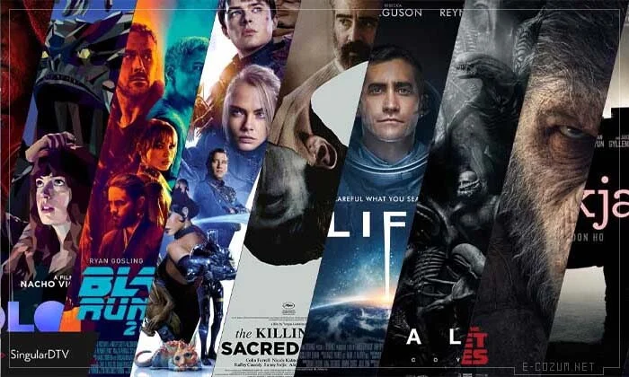INFLOW Awards’20 Influencer Marketing Dünyasının En İyilerini Ödüllendirdi...
18 yıl sonra yeni kadroyla yayınlanacak olan "Sen Hiç Ateşböceği Gördün mü?" filminin oyuncuları kimler?
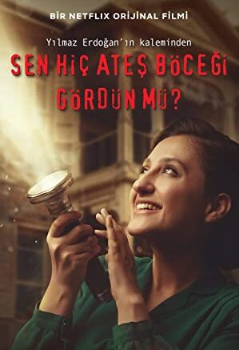2020 Yılında Büyük Bir Keyif Alarak İzlediğimiz 28 Netflix Filmi
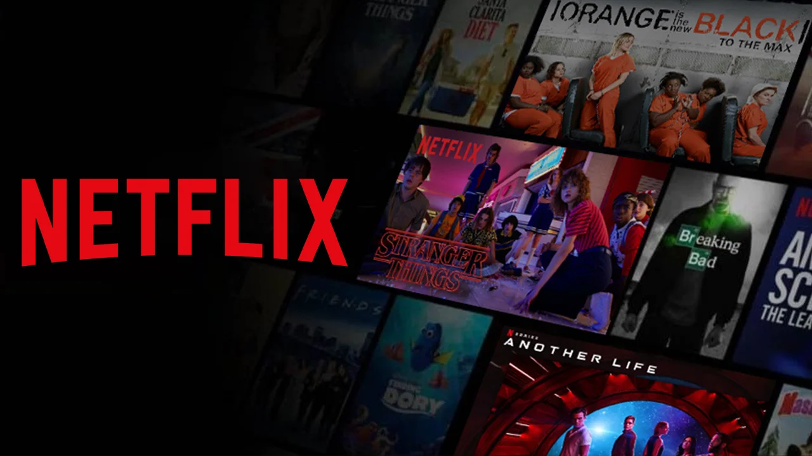“Camdaki Kız” başlıyor... İşte oyuncu kadrosu!
NE İZLEMELİ?
IMDb Puanlarına Göre Gelmiş Geçmiş En İyi 5 Film
1. Baba (1972) - IMDb 9,2

Baba, 40'lar ve 50'lerin Amerika'sında, bir İtalyan mafya ailesinin destansı öyküsünü konu alıyor. Don Corleone'nin kızı Connie'nin düğününde, ailenin en küçük oğlu ve bir savaş gazisi olan Michael babasıyla barışır. ... Yapılan araştırmalar sonucu Türkiye'de en fazla izlenen ve satılan film olma özelliği de taşır.
2. Esaretin Bedeli (1994) - IMDb 9,1
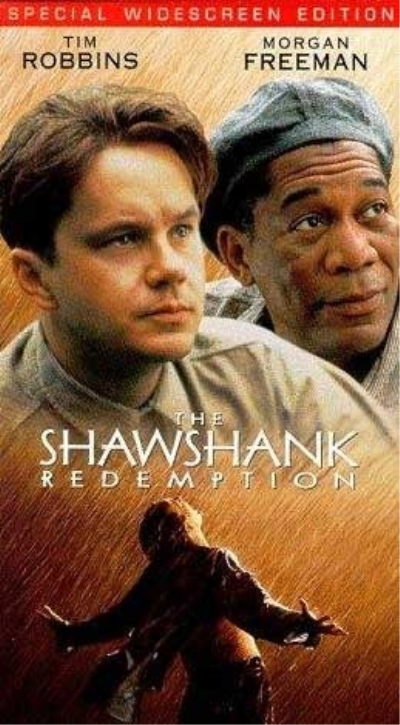Genç ve başarılı bir bankacı olan Andy Dufresne, karısını ve onun sevgilisini öldürmek suçundan ömür boyu hapse mahkum edilir ve Shawshank hapishanesine gönderilir. Burada başta Red olmak üzere yeni arkadaşlar edinir. Hapishane yaşamını uyum sağlamaya çalışırken diğer yandan da bilgisi ve kültürüyle etrafındaki insanları etkilemeyi başaracaktır.
3. Kara Şövalye (2008) - IMDb 9,0

The Dark Knight'da, Batman suça karşı savaşını daha da ileriye götürüyor: Teğmen Jim Gordon ve Bölge Savcısı Harvey Dent’in yardımlarıyla, Batman, şehir sokaklarını sarmış olan suç örgütlerinden geriye kalanları temizlemeye girişir. Bu ortaklığın etkili olduğu açıktır, ama ekip kısa süre sonra kendilerini, Joker olarak bilinen ve Gotham şehri sakinlerini daha önce de dehşete boğmuş olan suç dehasının yarattığı karmaşanın ortasında bulurlar.
4. Dövüş Kulübü (1999) - IMDb 8,8

Oregon Üniversitesinde yüksek lisansını yapan Chuck Palanhiuk'un uzak olmayan bir gelecekte geçen ve kafası karışık genç bir erkeği konu alan romanından yola çıkılarak çekilen Fight Club'da filmi anlatan, ünlü bir otomobil firmasında iyi bir işe sahiptir. Tek düze yaşamı kronik uykusuzluk sorunuyla çekilmez bir hale gelmiştir. Ailesi ve yakın bir arkadaşı olmayan Jack doktorunun tavsiyesi üzerine kanserli hastaların terapi grubuna katılır. Bu toplantılar esnasında Marla'yla tanışır o da genç adam gibi hasta olmadığı halde grubun toplantılarına katılmaktadır. Jack'in ve Marla'nın çabaları tüketici kültürünün anlamsızlığına karşı bir duruştur adeta kariyer sahibi ama yanlız insanların bir tepkisi. Jack'ın jenerasyonu ölü bir jenerasyondur. Bir yolculuk sonrası evinin yanmış olduğunu gördüğünde arayabileceği tek kişinin yolculuk sırasında tanıştığı sabun satıcısı Tyler Durden olmasıda adeta bunun bir kanıtıdır. İçilen birkaç biranın ardından park yerinde Tyler, kahramanımızı kendine vurması için kışırtacaktır. Aralarında başlayan bu kavga Jack'in hayatını değiştirecektir. Bir süre sonra Jack Tyler'ın yanına taşınır. Tyler'ın liderliğinde bir dövüş kulübünün kuruluşuyla bu kulübde sayıları elliyi aşmamak kaydıyla genç erkekler birbirleriyle dövüşmeye başlayacaklardır. Kısa sürede popüler hale gelen kulüp ve Tyler Durden hızlı bir şekilde bu ölü jenerasyonun mesihi haline gelir.
8. Forrest Gump (1994) - IMDb 8,7
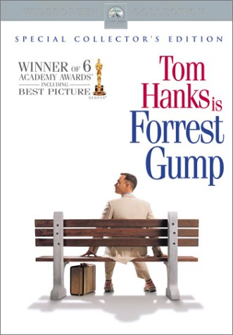Forrest Gump, zeka seviyesi 75 olan bir erkektir. Zeka seviyesi nedeni ile devlet okullarına girmekte bile zorlanan Forrest Gump zamanla akla mantığa uymayan başarılara imza atıyor. Her ne kadar zeka seviyesi düşük olsa da fiziksel olarak son derece sağlam olan Forrest Gump, zamanla gelişen olaylar zincirinde bizi hayal edemeyeceğimiz bir dünyaya götürüyor.
Ne Dinlemeli?
Sizler için En İyi 90'lar Türkçe Pop
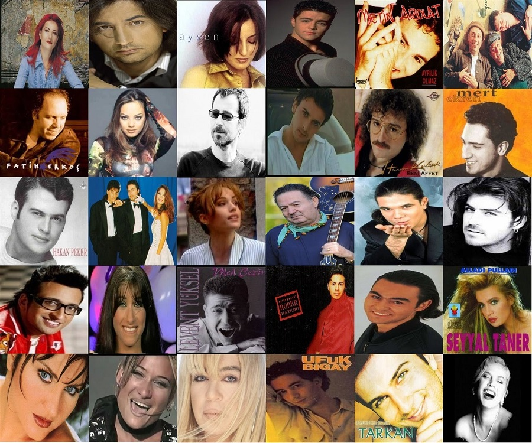90'lar Türk popunun unutulmaz bir dönemi. Aradan yıllar geçse de önemli kısmı hafızalardan silinmedi ve silinmeyecek de. Hazırsanız başlayalım!
1. Tarkan
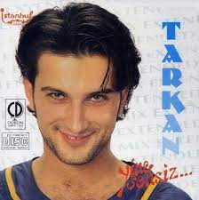ALBÜM:Ölürüm Sana / İnci Tanem (1997)
İnci Tanem şarkısına buradan erişebilirsiniz.
ALBÜM:Ölürüm Sana / Şımarık (1997)
Şımarık şarkısına buradan erişebilirsiniz.
Tarkan Ölürüm Sana albümü için tıklayın
2. Sezen Aksu
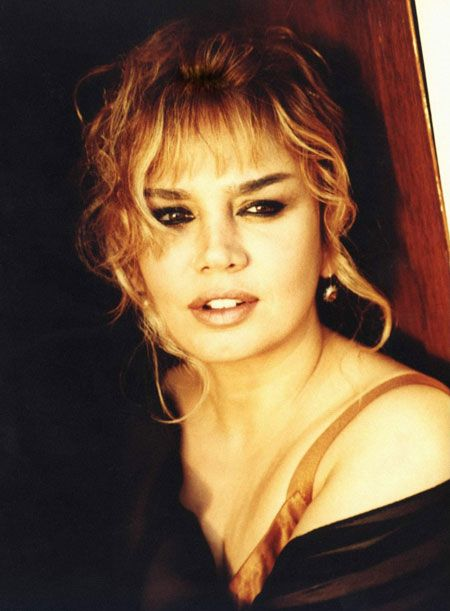ALBÜM:Gülümse / Hadi Bakalım (1991)
Hadi Bakalım şarkısına buradan erişebilirsiniz.
ALBÜM:Gülümse / Ne Kavgam Bitti Ne Sevdam (1991)
Ne Kavgam Bitti Ne Sevdam şarkısına buradan erişebilirsiniz.
3. Serdar Ortaç
ALBÜM:Aşk için / Karabiberim(1994)
Karabiberim şarkısına buradan erişebilirsiniz.
ALBÜM:Yaz Yağmuru / Ben Adam Olmam (1997)
Ben Adam Olmam şarkısına buradan erişebilirsiniz.
4.Demet Sağıroğlu
ALBÜM:Aşk için / Arnavut Kaldırımı(1994)
Arnavut Kaldırımı şarkısına buradan erişebilirsiniz.
5.Mustafa Sandal
ALBÜM:Detay / Aya Benzer(1998)
Aya Benzer şarkısına buradan erişebilirsiniz.
6.Harun Kolçak
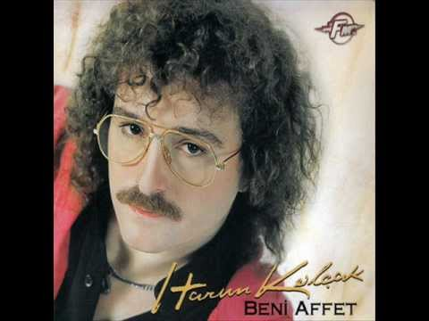ALBÜM:Beni Affet / Gir Kanıma(1991)
Gir Kanıma şarkısına buradan erişebilirsiniz.
7. Yıldız Tilbe
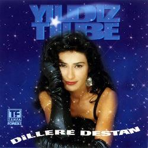ALBÜM:Sana Değer / Delikanlım (1995)
Delikanlım şarkısına buradan erişebilirsiniz.
8.Ajda Pekkan
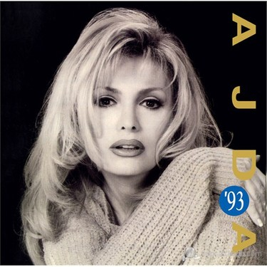ALBÜM:Eğlen Güzelim / Eğlen Güzelim(1996)
Eğlen Güzelim şarkısına buradan erişebilirsiniz.
Anasayfa | Hakkımda | Çalışmalarım | İletişim
© 2021 Tüm hakları saklıdır.| Tasarım:Ayşegül BİLTEKİN.